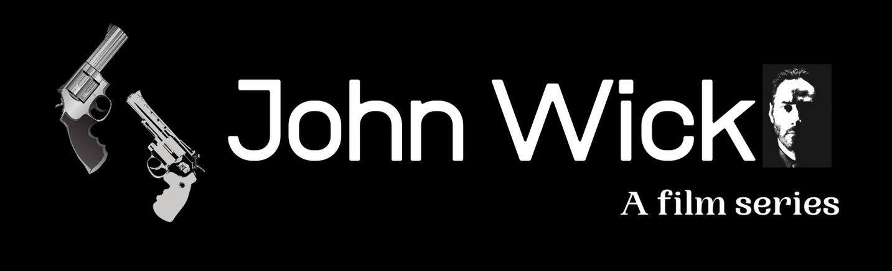

About
>>John Wick is an American neo-noir
action-thriller filmseries.
>>It is directed by Chad Stahelski,the
Screenwriter is Derek Kolstad .
>>John Wick is the fictional title character and
main protagonist of the John Wick film series.
He is portrayed by KEANU REEVES.
>>It also stars Michael Nyqvist, Alfie Allen,
Adrianne Palicki, Bridget Moynahan, Dean Winters,
Ian McShane, John Leguizamo, and Willem Dafoe.
Plot
>>The story focuses on John Wick (Reeves) searching
for the men who broke into his home, stole his vintage
car and killed his puppy, which was a last gift to him
from his recently deceased wife (Moynahan).
Trivia
>>According to Keanu Reeves, he did 90% of
his own stunts in the film.
>> John Wick: Chapter 3 — Parabellum nabbed
the top honors at the Golden Trailer Awards
on Wednesday night. The Keanu Reeves hitman
thriller took home the Best of Show award
for its “Conversation” trailer, in addition
to four other prizes including Best Action and
Best Summer 2019 Blockbuster Trailer.